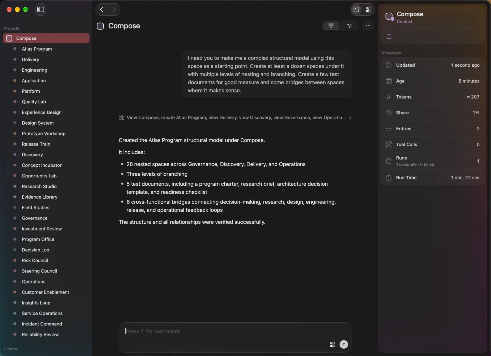

Work that stays where you put it.
Scint is a workspace where agents run inside your projects. Every space keeps its own documents, commands and conversation, so the work is still there when the model's turn ends, and the next request starts from it.
Development notes and early builds. Nothing else.

A session is the wrong place to keep work.
Most agent software is built around a session. A loop hands the model its message history, the model calls tools, and the history grows. An hour in, the early context is crowding out the new. When the session closes, the work is whatever happened to reach the disk, and the reasoning behind it sits in a thread you will not find again.
Scint keeps the model loop and moves the work out of it. A project is made of spaces. Each space holds its materials, its commands and one conversation. Agents run inside spaces and change the same objects you are looking at.
Delegation creates a place.
Hand a job to a sub-agent in most tools and a summary comes back. The context it spent is gone. In Scint a coordinating space briefs a child space and starts it. The child keeps its own documents and its own history. You can open it, read what happened, and continue the conversation the coordinator began.
A request from a person, from another space and from a schedule all arrive the same way, as a document submitted to a space. Every run is queued, recorded and cancelled by the same rules, whoever asked.

A task is a document that runs itself.
Tasks are written in the same editor as everything else. A task holds its instructions, its schedule, the command that runs it and the space it runs in. Its instructions can embed other documents, and those are read fresh each time the task fires.
When a schedule comes due it wakes a task that already lives in a space, with that space's materials and run history around it. Recurring work keeps one editable definition and a complete record of every run.
Read everything added to this space since last Monday and write a one-page summary. Lead with decisions, then open questions.
Add the summary to Weekly digests and say which notes you left out.
One conversation per space.
A space has one thread. Your requests and the agent's replies go in it. Everything the agent did to produce a reply, its reasoning, every tool call, every error, is kept in a branch of its own, attached to the thread at the point where the run happened.
You read a short conversation. The full record of the work is one step away when you want it.
structureView this space
structureCreate Atlas Program: 28 spaces in one call
structureView Delivery, Discovery, Governance, Operations
contentCreate 5 documents, among them Program Charter, Architecture Decision Template and Operational Readiness Checklist
structureBridge Evidence Library, Quality Lab, Release Train, Design System, Steering Council, Insights Loop, Incident Command, Risk Council
structureView every space again to verify it
Plus the agent's reasoning between calls.
One entry: the reply. The request was routed to Evaluate and answered by a different provider than the one that built the project.
The runs that built this project spent about 18,000 tokens across 61 tool calls. The conversation they left behind is about 420. Nothing was summarized away: every call is still in its branch, kept whole and carried by no one.
Context is resolved, never accumulated.
No request inherits a growing stack of messages. Each one is assembled from the space as it stands: the intent's instructions, the structure and commands in view, an index of the space's documents, a bounded excerpt of history, and the request. Revise a brief or change the model, and the next request sees the space as you left it.
Intent decides the view. Arranging work across spaces needs breadth. Finishing a piece of work needs depth. There is no mode to pick.
Each request is routed by Jev, TypeSafe's decision model. It reads the request and returns one choice with a confidence. Above one half, the space switches intent. Below it, the space stays as it is and the request runs anyway. Routing takes one call and no agent turn.
Listed in the request
History, in characters
Your files, your terminal, your models.
Plain files
Spaces, documents and history are JSON on your Mac, under ~/.local/share/scint. Read them, diff them, back them up.
Any provider, mid-conversation
Codex and Claude Code are both built in. Each run is a single call that is asked to remember nothing. Continuity lives in the space, so you can change provider between two requests and the second picks up where the first stopped.
Commands are tools
A command is an executable with typed arguments. Add one to a space and that space's agent can call it. It runs with your shell's environment, the way it does in your terminal.
Everything has an address
Every space, document and command has a scint:// link. Paste one into a document, hand one to an agent, or open one from Shortcuts.
In development, and far enough along to show.
Scint is designed and built by one person, Tim Kaechle. The screens and numbers on this page are recorded from the running app. There is no release date yet.
It needs macOS 26 and Codex or Claude Code installed. Scint runs on the subscription you already have and sells no tokens.
Follow along
Development notes, recordings and early builds as they become runnable.
Founding licence
Pay once now and own Scint 1.0 when it ships.
- Builds as they become runnable, before any public beta.
- No ship date is promised.
- Refundable on request until the first build reaches you.
- Below the launch price, for a limited number of licences.